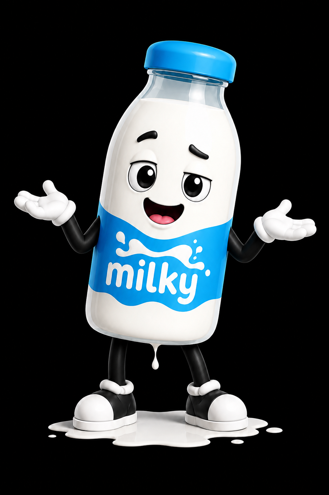

Main control screen
The main screen is built for fast understanding. The operator sees suction, pulse rhythm, start controls, and navigation without hunting through clutter.
Built by PulseCore, the Pluto 9000 is a premium milker designed to turn the milking session into a smoother, more comfortable rhythm. With multiple controls for suction, pulse, hold, and release, it gives the operator a refined way to shape the full experience instead of simply running a machine.
Example vacuum setting shown in the interface.
Illustrative pulses per minute in the live software demo.
Controlled solenoid actions working together as one smoother system.
Comfort phases visible on-screen: pressure, vacuum pull, hold, pulse, and release.
This version moves away from the usual glossy AI landing page treatment. Instead, it leans into a sharper brand system built around Milky’s blue, cream, and black palette, with bolder panels, stronger hierarchy, and a more deliberate product-story flow.
The page feels like it belongs to Pluto 9000, not a generic startup template. Milky, the product language, and the new panel system all work together.
Instead of one long gradient scroll, this site breaks the story into sections the operator can actually scan: control, rhythm, comfort, hardware, operator benefits, and final pitch.
The milky-blue look stays intact, but the new light/dark toggle makes the whole page more versatile for demos, screenshots, and customer-facing presentations.
Pluto 9000 puts the full session on display. The interface is built around clear values, live movement, and comfort-focused controls that help the operator read the machine at a glance. These screens are treated like real product assets so the software feels like part of the sales story, not an afterthought.
The main screen is built for fast understanding. The operator sees suction, pulse rhythm, start controls, and navigation without hunting through clutter.

The live cadence display turns pressure, vacuum pull, hold, pulse, and release into a motion that can be seen, understood, and trusted.

Large controls make quick changes simple. The goal is not just control over force, but control over the feel of the whole session.
A premium milker should not make the person using it fight through confusing controls. Pluto 9000 is designed to make the session easier to read, easier to tune, and easier to repeat. That means faster adjustments, clearer feedback, and a comfort pattern that can be returned to again and again.
The page keeps him upbeat through the top and middle of the story. This is where the promise is strongest: multiple controls, a clean operator experience, and a machine that feels more refined because it was designed to be read and tuned.

Pluto 9000 is built around the rhythm that matters most: pressure, vacuum pull, hold, pulse, and release. The motion is smooth, deliberate, and quietly familiar, echoing the cycle that experienced farmers already understand by feel.
The comfort of Pluto 9000 comes from rhythm. Each phase moves into the next with a flow that feels familiar instead of abrupt. The pattern is readable, repeatable, and easy to trust.
Farmers know the feel of a good milking cycle without needing it explained. This section brings that instinct onto the page, turning the quiet language of pressure and release into a visible motion.
The motion starts with control, not shock.
The working phase stays steady, confident, and readable.
The rhythm becomes familiar, not abrupt or chaotic.
The session lets go with intention, and that difference matters.

Pluto 9000 is designed around more than suction alone. A great session has rhythm, timing, rest, and release. The machine gives the operator a way to shape the feel of the process, not just the force behind it.
That difference matters. When the motion is smoother and the release is more deliberate, the full experience can feel less abrupt, less mechanical, and more natural.
The operator can shape the session around comfort, not just output.
Live software makes the invisible part of the cycle visible.
A deliberate let-go turns the end of each cycle into a feature.
Repeatable settings help the session stay steady from run to run.
At this point the page starts moving from excitement into the deeper sales pitch. The promise becomes more intentional: a premium milker that can pull, pulse, hold, and release with far more finesse than a one-control system.

Pluto 9000 uses four controlled air-path actions to create a more refined milking rhythm. The operator experiences it as better control, cleaner pulsing, softer transitions, and a release that feels deliberate.
This is still marketing copy, not a wiring diagram. The point is easy understanding: four independent actions working together to shape a smoother session.

Manages the primary pull so the session feels steady, confident, and controlled instead of rough or unpredictable.
Creates the repeating squeeze-and-rest motion that gives Pluto 9000 its smooth, steady heartbeat.
Adds another layer of feel adjustment, helping the machine move from simple operation to a more refined experience.
Delivers the signature let-go moment, easing pressure and giving the animal a more comfortable rest between cycles.
A premium milker should not make the person using it fight through confusing controls. Pluto 9000 is designed to make the session easier to read, easier to tune, and easier to repeat.
Large controls make quick changes simple, letting the operator shape the feel without slowing down the workflow.
Live motion on the screen shows what the machine is doing, making the session feel visible and controlled.
Once the preferred feel is found, the machine is built around returning to that smooth, familiar cadence.

At the start, the machine story feels confident and clean.

The middle of the page leans harder into the real shape of the session.

By the lower sections, the sales pitch is doing exactly what you asked: Milky starts to look spent.
The original promise still carries through this version: premium control, familiar rhythm, softer transitions, and a milking cycle that feels second to none. What has changed is the way the story is packaged and sold.
The Pluto 9000 is about multiple controls working together. That is the core difference between simply turning something on and actually shaping the session.
The page stays in marketing language on purpose. It describes what the system does, what the operator feels, and what the animal experiences without drowning the visitor in engineering talk.
This layout leaves space for real future screenshots, diagrams, videos, testimonials, and operator notes without needing another visual reset.
Any milker can pull. Pluto 9000 is built to pull and let go with intention. That controlled release helps prevent the session from feeling like one constant tug. Instead, the animal gets a rhythm: pressure, vacuum pull, hold, pulse, release.
The release is the moment that makes Pluto 9000 feel different. It helps the session feel calmer and more natural, with smoother transitions and less abrupt pressure change.
That is the premium promise: a milker that does more than operate. It helps shape a better experience from start to finish.
The name is playful, but the goal is serious: premium control, familiar rhythm, softer transitions, and a milking cycle that feels second to none.
Exactly as requested, the mascot arc now lands with a tired, spent pose during the final pitch. The emotional shape of the page changes as the product story gets heavier and more persuasive.

PulseCore presents the Pluto 9000: a premium smart milker with multiple controls, live software screens, motion-driven comfort visuals, and a signature release cycle that makes the category feel modern.
Pluto 9000 is built to be smoother, smarter, and second to none — and now the site finally looks like a product with a personality of its own.

The bottom of the story ends in a visibly tired pose.
The mascot now clearly reflects the “after the session” feeling.
Even with the playful character arc, the product still reads as confident and premium.